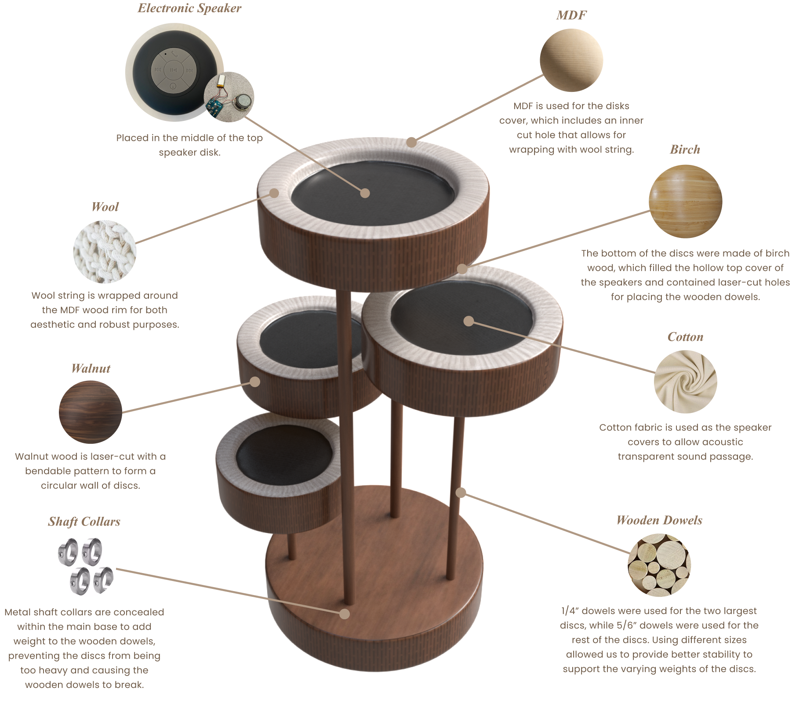
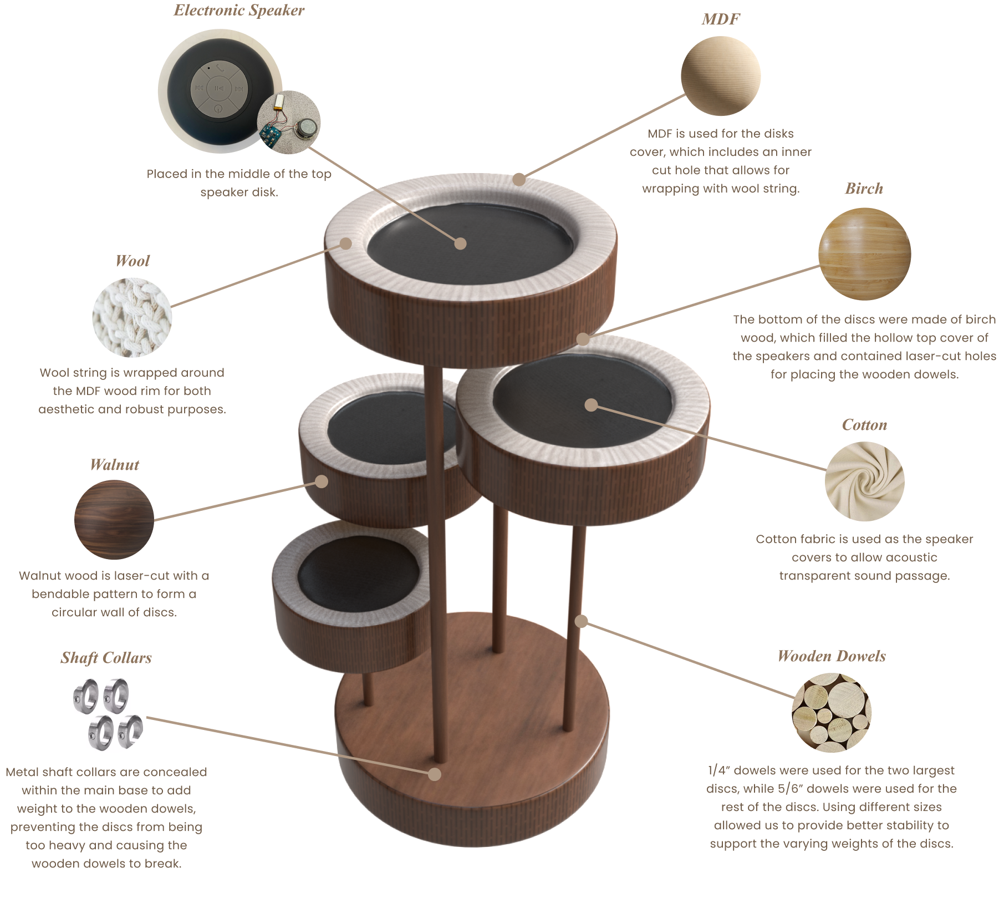

Falling Eclipse
Type: Product. 3D Modelling, Graphics, Fabrication
Team: Angela Lee, Min Kang, Jason Yang
Tools: Illustrator, Maya
Date: May to August 2022
Project Description
In the Materials in Design course, our team had to create a speaker and consider material selection based on factors such as durability, environmental impact, tactile properties, manufacturing processes, compatibility, and the effects of specific forms of use. We decided to design our speaker for users with insomnia and limited home space. As a result, we created Falling Eclipse, a speaker that can be placed on a flat surface or hung from the ceiling while maintaining a minimal and clean design

Final model of Falling Eclipse.
Design Process
Before we began brainstorming and sketching our model, we selected two primary materials for our speaker: wood and fabric. Then, we researched one existing speaker on the market for each material to analyze its aesthetics, functionality, and materiality.
After conducting in-depth research, we gained a better understanding of the materials and decided to apply the elastic characteristics of the fabric while breaking the mindset that wood should always be flat.


Each of us created three sketches to explore different possibilities for the speaker, in total 12 sketches.
Each of us created three sketches to explore different possibilities for the speaker, in total 12 sketches.
By combining our sketches, we developed a concept that involved using circular wooden disks in varying sizes with fabric in the middle to allow sound to transmit through. To test this concept, we created two low-fidelity prototypes using styrene, cardboard, and wool.

After creating the two low-fidelity prototypes based on our concept, we found that the left model was quite unstable. As a result, we decided to move forward with the right concept instead.


The detailed explanation of the fianlized concept, including orthographic views, exploded view and isometric view of the speaker.
After receiving feedback from our professor and peers, we decided to make some changes to our prototype. In order to create the actual product, we first constructed a 1-to-1 scale model using cardboard, wooden dowels, wool, and cotton. This model served as a demonstration of the speaker's size and overall dimensions, allowing us to test the sizes of each component and make any necessary adjustments before moving on to the final product.
 

We created a demo model using cardboard. After that we finalized our material choice and used laser cutting for the wooden parts.


We used wool yarn to wrap the wooden rim and glued down the end of the string to secure it. (left)
Used metal shaft collars to tightly hold the wooden dowels and withstand the weight of the wooden discs inside the base. (middle)
To achieve a dark brown finish for the wooden dowels, we paint them using arcylic paint. (right)
Challenges
One of the biggest challenges of this project was dealing with the wooden parts. Since we wanted to use wood to surround the wooden discs, we tried different variations of bendable patterns using laser cutting. In our first iteration, the gap between the lines was too far apart, causing the wood to immediately break when we tried to bend it. We then modified our design pattern by making the lines closer together, which allowed us to bend the wood successfully. However, the laser cutting left a burnt mark on the wood, which affected the aesthetics of the product. To prevent this, we applied masking tape on the wood parts that we needed to laser cut, but this left a sticky residue after removing the tape. Finally, we used alcohol wipes to remove the residue.
Another challenge we had is we think the colour of wooden dowels is too light. As we wanted to achieve a dark colour of the dowels, we experiment with tinting them using black tea. We tinted them for at least 2 days, but they did not meet our expectation. At last, we used acrylic paint instead.


We noticed that the gap between lines are too far away which leads to breakage. (left)
The wodden dowel with lighest colour is the original colour. The darker one has been tinted with black tea, and the darkest one is painted with arcylic paint. (right)
Reflection
Throughout this project, I have come to understand that fabrication is a time-consuming task and that it is difficult to create a perfect model solely based on a digital model. For instance, we initially attempted to tint the wooden dowels with black tea, but the shade turned out uneven and too light compared to our expectations, despite the fact that we tinted them for 2 days. Although we at last used acrylic paint for the wooden dowels, I believe that it is still beneficial to experiment with different methods of tinting wood to explore how they can affect the final outcome.